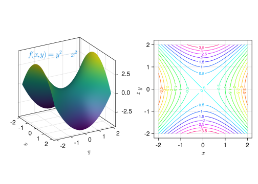

12 Derivadas de funciones de varias variables
\[ \newcommand{\mathbb{N}}{\mathbb{N}} \newcommand{\mathbb{Z}}{\mathbb{Z}} \newcommand{\mathbb{Q}}{\mathbb{Q}} \newcommand{\mathbb{R}}{\mathbb{R}} \newcommand{\mathbb{C}}{\mathbb{C}} \DeclareMathOperator{\Int}{Int} \DeclareMathOperator{\Ext}{Ext} \DeclareMathOperator{\Fr}{Fr} \DeclareMathOperator{\Adh}{Adh} \DeclareMathOperator{\Ac}{Ac} \DeclareMathOperator{\sen}{sen} \]
Hasta ahora hemos estado estudiando funciones que dependían de una sola variable independiente, pero en muchos casos de la vida real aparecen funciones que dependen de más de una variable, como por ejemplo
- El área de un triángulo depende de dos factores que son su base y su altura.
- El volumen que ocupa un gas perfecto depende de dos factores que son su presión y su temperatura.
- El capital de una inversión depende de el tiempo y el tipo de interés.
- El camino recorrido por un cuerpo en un movimiento de caída libre depende de multitud de factores entre los que cabe destacar: el tiempo que dure la caída, el área de la sección transversal del cuerpo, la latitud del lugar, la altura sobre el nivel del mar, la presión del aire, la temperatura del aire, etc.
Estas dependencias se expresan con funciones de varias variables. En este capítulo analizaremos las derivadas este tipo de funciones, en particular funciones de \(\mathbb{R}^2\) en \(\mathbb{R}\) y de \(\mathbb{R}^3\) en \(\mathbb{R}\), aunque los resultados se pueden generalizar fácilmente para funciones de \(\mathbb{R}^n\) en \(\mathbb{R}\).
12.1 Función de varias variables
Definición 12.1 (Función de varias variables) Una función de \(n\) variables de un conjunto \(A_1\times \cdots \times A_n\) en un conjunto \(B\), es una relación que asocia a cada tupla \((a_1,\ldots,a_n)\in A_1\times \cdots\times A_n\) un único elemento de \(B\) que se denota \(f(a_1,\ldots,a_n)\), y se llama imagen de \((a_1,\ldots,a_n)\) mediante \(f\).
\[ \begin{array}{lccc} f: & A_1\times\cdots\times A_n & \longrightarrow & B \\ &(a_1,\ldots,a_n) & \longrightarrow & f(a_1,\ldots,a_n) \end{array} \]
Cuando \(A_1,\ldots,A_n,B\subseteq \mathbb{R}\), entonces se dice que \(f\) es una función real de \(n\) variables reales o bien un campo escalar.
Ejemplo 12.1
- El área de un triángulo es la función real de dos variables reales
\[f(x,y)=\frac{xy}{2}.\]
El volumen de un gas perfecto es otra función real de dos variables
\[v=f(t,p)=\frac{nRt}{p},\]
con \(n\) y \(R\) constantes.
12.1.1 Gráfica de una función de dos variables
La representación gráfica cartesiana de una función de dos variables \(f(x,y)\) es una superficie del espacio real \(\mathbb{R}^3\) donde cada punto de la superficie tiene coordenadas \((x,y,z)\), siendo \(z=f(x,y)\).

Ejemplo 12.4 La función \(f(x,y)=\dfrac{xy}{2}\) que mide el área de un triángulo de base \(x\) y altura \(y\) tiene la siguiente representación gráfica:

Y la función \(\displaystyle f(x,y)=\frac{\operatorname{sen}(x^2+y^2)}{\sqrt{x^2+y^2}}\) tiene la siguiente representación gráfica que simula las ondas que produce una gota de agua al caer sobre un líquido.

Conjunto de nivel de un campo escalar
Visualizar la gráfica de una función de dos variables no es fácil, sobre todo si se representa en un papel que, a fin de cuentas, es un plano en dos dimensiones. Un recurso bastante habitual para entender el comportamiento de una función de dos variables son las curvas de nivel, que consisten en representar en el plano euclídeo los puntos \((x,y)\) que tienen la misma imagen.
Definición 12.2 (Conjunto de nivel) Dada una función de \(n\) variables \(f:\mathbb{R}^n\rightarrow \mathbb{R}\), se llama conjunto de nivel \(c\) de \(f\) al conjunto
\[ C_{f,c}=\{(x_1,\ldots,x_n): f(x_1,\ldots,x_n)=c\}. \]
Ejemplo 12.2 Si \(f(x,y)=x^2+y^2\) y \(P=(1,1)\), el conjunto de nivel de \(f\) que incluye al punto \(P\) es
\[ C_{f,2} = \{(x,y): f(x,y)=f(1,1)=2\} = \{(x,y): x^2+y^2=2\}, \]
que es la circunferencia del plano real centrada en el origen y de radio \(\sqrt{2}\).

Ejemplo 12.3 La siguiente gráfica representa algunas de las curvas de nivel de la función \(f(x,y) = y^2-x^2\).
Las curvas de nivel se utilizan en muchas aplicaciones como por ejemplo en los mapas topográficos, donde cada curva representa los puntos que están a la misma altura sobre el nivel del mar, o en los mapas meteorológicos, donde cada curva representa los puntos con la misma presión atmosférica.


Límites y continuidad
El concepto de límite de una función de una variable se puede extender fácilmente a funciones de varias variables, pero antes necesitamos introducir, desde un punto de vista topológico, el concepto equivalente a un entorno de un punto en la recta real, en espacios de mayor dimensión.
Definición 12.3 (Entorno de un punto en el plano real) Dado un punto del plano \((x_0,y_0)\in \mathbb{R}^2\), se llama entorno de \((x_0,y_0)\) a cualquier disco abierto \(\{(x,y):\sqrt{(x-x_0)^2+(y-y_0)^2}<\varepsilon\}\) con \(\varepsilon>0\). El número \(\varepsilon\) se conoce como radio del entorno.
Para cualquier \(\varepsilon>0\) el conjunto \(\{(x,y):\sqrt{(x-x_0)^2+(y-y_0)^2}<\varepsilon\}\setminus \{(x_0,y_0)\}\) se llama entorno reducido de \((x_0,y_0)\).
Geométricamente, un entorno de \((x_0,y_0)\) de radio \(\varepsilon\) está formado por todos los puntos interiores del círculo de radio \(\varepsilon\) centrado en \((x_0,y_0)\).

De manera similar se define un entorno en el espacio real.
Definición 12.4 (Entorno de un punto en el espacio real) Dado un punto del espacio \((x_0,y_0,z_0)\in \mathbb{R}^3\), se llama entorno de \((x_0,y_0z_0)\) a cualquier bola abierta \(\{(x,y,z):\sqrt{(x-x_0)^2+(y-y_0)^2+(z-z_0)^2}<\varepsilon\}\) con \(\varepsilon>0\). El número \(\varepsilon\) se conoce como radio del entorno.
Para cualquier \(\varepsilon>0\) el conjunto \(\{(x,y,z):\sqrt{(x-x_0)^2+(y-y_0)^2+(z-z_0)^2}<\varepsilon\}\setminus \{(x_0,y_0,z_0)\}\) se llama entorno reducido de \((x_0,y_0,z_0)\).
Geométricamente, un entorno de \((x_0,y_0,z_0)\) de radio \(\varepsilon\) está formado por todos los puntos interiores de la esfera de radio \(\varepsilon\) centrado en \((x_0,y_0,z_0)\).

Definición 12.5 (Límite de una función de varias variables) Dada una función de \(n\) variables \(f:\mathbb{R}^n\rightarrow \mathbb{R}\) definida en un entorno reducido del punto \((a_1, \ldots, a_n)\), se dice que \(l\) es el límite de \(f\) en el punto \((a_1, \ldots, a_n)\), si para cada \(\varepsilon>0\) existe un \(\delta>0\) tal que si \(0<\sqrt{(x_1-a_1)^2+\cdots+(x_n-a_n)^2}<\delta\), entonces \(|f(x_1,\ldots,x_n)-l|<\varepsilon\), y en tal caso, se denota
\[ \lim_{(x_1,\ldots,x_n)\rightarrow (a_1,\ldots,a_n)}f(x_1,\ldots,x_n) = l. \]
En el caso de una función de una variable \(f(x)\), vimos que para que existiese el límite de la función en el punto \(a\), bastaba con ver que existía el límite por la izquierda (cuando nos aproximamos a \(a\) con valores menores que \(a\)) y el límite por la derecha (cuando nos aproximamos a \(a\) con valores mayores que \(a\)) y que eran iguales. Sin embargo, para funciones de varias variables esto no es así, ya que para demostrar la existencia del límite es necesario probar que el límite existe cuando nos acercamos a \((x_0,\ldots,y_0)\) por cualquier posible trayectoria en \(\mathbb{R}^n\), y todos los límites coinciden.
Ejemplo 12.5 El límite de la función \(f(x,y)=\dfrac{xy}{x^2+y^2}\) en \((0,0)\) no existe, ya que si nos aproximamos a \((0,0)\) tomando puntos de la recta \(y=mx\), tenemos
\[\begin{align*} \lim_{(x,mx)\to(0,0)} f(x,mx) &= \lim_{x\to 0} \frac{xmx}{x^2+(mx)^2} = \lim_{x\to 0} \frac{mx^2}{(m^2+1)x^2} \\ & \lim_{x\to 0} \frac{m}{m^2+1} = \frac{3m}{m^2+1}, \end{align*}\]
que nos da un límite distinto para cada \(m\), es decir, para cada dirección de aproximación obtenemos un límite distinto.
Precaución
La estrategia de calcular el límite a lo largo de las trayectorias rectas \(y=y_0+m(x-x0)\) que pasan por el punto \((x_0,y_0)\) no garantiza la existencia del límite, aún cuando todos los límites existan y sean iguales.
Ejemplo 12.6 Para la función \(f(x,y)=\frac{\operatorname{sen}(xy)}{x+y}\), si nos aproximamos a \((0,0)\) tomando los puntos de la recta \(y=mx\), se tiene
\[\begin{align*} \lim_{(x,mx)\to(0,0)} f(x,mx) &= \lim_{x\to 0} \frac{\operatorname{sen}(xmx)}{x+mx} \\ &= \lim_{x\to 0} \frac{\operatorname{sen}(mx^2)}{(m+1)x} \\ & \lim_{x\to 0} \frac{m2x\cos(mx^2)}{m+1} \tag{L'Hôpital} = 0. \end{align*}\]
Por tanto, el límite existe y valeo \(0\) cuando nos aproximamos a \((0,0)\) siguiendo trayectorias rectas. Sin embargo, existen otras trayectorias de aproximación donde el límite no existe, como por ejemplo, la trayectoria \(y=-\operatorname{sen}(x)\).
\[\begin{align*} \lim_{(x,-\operatorname{sen}(x))\to(0,0)} f(x,-\operatorname{sen}(x)) &= \lim_{x\to 0} \frac{\operatorname{sen}(-x\operatorname{sen}(x))}{x-\operatorname{sen}(x)} \\ &= \lim_{x\to 0} \frac{\cos(-x\operatorname{sen}(x))(-\operatorname{sen}(x)-x\cos(x))}{1-\cos(x)} \tag{1} \\ &= \lim_{x\to 0} \frac{-\operatorname{sen}(-x\operatorname{sen}(x))(-\operatorname{sen}(x)-x\cos(x))^2+\cos(-x\operatorname{sen}(x))(-2\cos(x)+x\operatorname{sen}(x))}{\operatorname{sen}(x)} \tag{2} \\ &= \infty. \end{align*}\] (1 y 2) Aplicando la regla de L’Hôpital.
Por consiguiente, no existe el límite de \(f\) en \((0,0)\).
Afortunadamente, el álgebra de límites visto en la Proposición 6.2 también es válido para funciones de varias variables.
Ejemplo 12.7 El límite de la función \(f(x,y)=\frac{3xy^2}{x^2+y^3}\) en el punto \((2,1)\) es
\[\begin{align*} \lim_{(x,y)\to(2,1)} f(x,y) &= \lim_{(x,y)\to(2,1)} \frac{3xy^2}{x^2+y^3} \\ &= \frac{\lim_{(x,y)\to(2,1)} 3xy^2}{\lim_{(x,y)\to(2,1)} x^2+y^3} \\ &= \frac{3\lim_{(x,y)\to(2,1)} x\lim_{(x,y)\to(2,1)}y^2}{\lim_{(x,y)\to(2,1)} x^2+\lim_{(x,y)\to(2,1)}y^3} \\ &= \frac{3\cdot 2\cdot 1^2}{2^2 + 1^3} = \frac{6}{5}. \end{align*}\]
12.1.2 Función continua
Una vez definido el límite de una función de varias variables, el concepto de continuidad se extiende de manera natural a funciones de varias variables.
Definición 12.6 Dada una función de \(n\) variables \(f:\mathbb{R}^n\rightarrow \mathbb{R}\), se dice que \(f\) es continua en el punto \((a_1, \ldots, a_n)\) si
\[ \lim_{(x_1,\ldots,x_n)\rightarrow (a_1,\ldots,a_n)}f(x_1,\ldots,x_n) = f(a_1,\ldots, a_n). \]
12.1.3 Funciones parciales
Definición 12.7 (Función parcial) Dada una función de \(n\) variables \(f:\mathbb{R}^n\rightarrow \mathbb{R}\), se llama función parcial \(i\)-esima de \(f\) a cualquier función \(f_i:\mathbb{R}\rightarrow \mathbb{R}\) que resulta de fijar todas las variables de \(f\) como constantes, excepto la variable \(i\), es decir:
\[f_i(x)=f(c_1,\ldots,c_{i-1},x,c_{i+1},\ldots,c_{n}),\]
con \(c_j\) \((j=1,\ldots, n,\ j\neq i)\) constantes.
Ejemplo 12.8 Si consideramos la función del área de un triángulo
\[f(x,y)=\frac{xy}{2},\]
y fijamos el valor de la base \(x=c\), entonces el área del triángulo ya sólo depende de la altura y \(f\) se convierte en una función de una sola variable, que es la función parcial:
\[ f_1(y)=f(c,y)=\frac{cy}{2}, \]
con \(c\) constante.
12.2 Derivadas parciales
Al igual que vimos cómo calcular la variación de una función de una variable, tiene sentido medir la variación de una función de varias variables con respecto a cada una de sus variables.
Sea \(f(x,y)\) una función de varias variables de \(\mathbb{R}^2\). Si estamos en el punto \((x_0,y_0)\) y nos movemos una cantidad \(\Delta x\) en la dirección del eje \(X\), entonces, al mantenerse la coordenada \(y\) constante, pasaremos desde el punto \((x_0,y_0)\) al punto \((x_0+\Delta x,y_0)\), y la variación que experimenta la función será
\[\Delta z=f(x_0+\Delta x,y_0)-f (x_0,y_0).\]
La variación relativa que experimenta la función con respecto a la variable \(x\) vendrá dada por el cociente
\[\frac{\Delta z}{\Delta x}=\frac{f(x_0+\Delta x,y_0)-f(x_0,y_0)}{\Delta x}.\]
Si en lugar de medir la variación de una función con respecto a una variable en un intervalo, medimos la variación en un punto, es decir, cuando \(\Delta x\) tiende a 0, entonces obtenemos una tasa de variación instantánea:
\[\lim_{\Delta x\rightarrow 0}\frac{\Delta z}{\Delta x}=\lim_{\Delta x \rightarrow 0}\frac{f(x_0+\Delta x,y_0)-f(x_0,y_0)}{\Delta x}.\]
Al valor del límite, cuando existe, también se le conoce como derivada parcial de \(f\) con respecto a la variable \(x\) en el punto \((x_0,y_0)\) y se nota
\[\frac{\partial f}{\partial x}(x_0,y_0).\]
Esta derivada parcial mide la tasa de variación instantánea de \(f\) en el punto \(P=(x_0,y_0)\) cuando \(P\) se mueve en la dirección del eje \(X\).
12.2.1 Interpretación geométrica de la derivada parcial
Geométricamente, \(z=f(x,y)\) define una superficie. Si se corta esta superficie con el plano de ecuación \(y=y_0\) (es decir, si \(y\) se fija como una constante), la intersección de este plano con la superficie es una curva plana cuya pendiente en el punto \((x_0,y_0)\) es la derivada parcial de \(f\) con respecto a \(x\) en el punto \((x_0,y_0)\).
El concepto de derivada parcial visto para funciones de dos variables puede extenderse fácilmente para funciones de \(n\) variables.
Definición 12.8 (Derivada parcial) Dada una función de \(n\) variables \(f(x_1,\ldots,x_n)\), se dice que \(f\) es derivable parcialmente con respecto a la variable \(x_i\) en el punto \(a=(a_1,\ldots,a_n)\) si existe el límite
\[ \lim_{h\rightarrow 0} \frac{f(a_1,\ldots,a_{i-1},a_i+h,a_{i+1},\ldots,a_n)-f(a_1,\ldots,a_{i-1},a_i,a_{i+1},\ldots,a_n)} {h}. \]
En tal caso, al valor del límite se le llama derivada parcial de \(f\) en \(a\) con respecto a la variable \(x_i\), y se denota
\[ f'_{x_i}(a)=\frac{\partial f}{\partial x_i}(a). \]
Como se puede observar, la definición de derivada para funciones de una variable es un caso particular de esta definición para \(n=1\).
Al medir la variación de \(f\) con respecto a la variación de una sola de sus variables \(x_i\) en un punto \(a=(a_1,\ldots,a_n)\), el resto de las variables se pueden considerar como constantes y, en tal caso, podemos ver a \(f\) como una función parcial \(i\)-ésima
\[f_i(x_i)=f(a_1,\ldots,a_{i-1},x_i,a_{i+1},\ldots,a_n).\]
La derivada parcial de \(f\) con respecto a \(x_i\) puede calcularse derivando esta función:
\[\frac{\partial f}{\partial x_i}(a)=f_i'(a_i).\]
Regla. Para derivar parcialmente \(f(x_1,\ldots,x_n)\) con respecto a una variable \(x_i\), se deriva \(f\) como si la única variable fuese \(x_i\), tratando el resto de las variables como constantes.
Ejemplo En la ecuación de estado de los gases perfectos, el volumen es una función que depende de dos variables
\[v(t,p)=\frac{nRt}{p},\]
donde \(t\) mide la temperatura, \(p\) la presión y \(n\) y \(R\) son constantes.
La tasa de variación instantánea que experimenta el volumen con respecto a la presión viene dada por la derivada parcial de \(v\) con respecto a \(p\).
Para calcular esta derivada parcial se fija \(t\) como constante y se deriva \(v\) como si la única variable fuese \(p\):
\[\frac{\partial v}{\partial p}(t,p)=\frac{d}{dp}\left(\frac{nRt}{p}\right)_{\mbox{$t=$cte}}=\frac{-nRt}{p^2}.\]
Del mismo modo, la tasa de variación instantánea del volumen con respecto a la temperatura es:
\[\frac{\partial v}{\partial t}(t,p)=\frac{d}{dt}\left(\frac{nRt}{p}\right)_{\mbox{$p=$cte}}=\frac{nR}{p}.\]
12.3 Vector gradiente
Definición 12.9 (Vector gradiente) Dado un campo escalar \(f(x_1,\ldots,x_n)\), se llama gradiente de \(f\), y se escribe \(\nabla f\), a la función que a cada punto \(a=(a_1,\ldots,a_n)\) le asigna el vector cuyas coordenadas cartesianas son las derivadas parciales de \(f\) en \(a\),
\[\nabla f(a)=\left(\frac{\partial f}{\partial x_1}(a),\ldots,\frac{\partial f}{\partial x_n}(a)\right).\]
Más adelante se mostrará que vector gradiente en un punto dado tiene la misma magnitud y dirección que la velocidad máxima de variación de la función en ese punto.
De este modo, , mientras que \(-\nabla f(a)\) indica la dirección de máximo decrecimiento.
Ejemplo 12.9 Al calentar una superficie la temperatura \(t\) (en ºC) en cada punto \((x,y,z)\) (en m) de dicha superficie viene dada por la función:
\[ t(x,y,z)=\frac{x}{y}+z^2. \]
La dirección en la que más rápidamente aumenta la temperatura nos la da el vector gradiente
\[ \nabla t(x,y,z)=\left(\frac{\partial t}{\partial x}(x,y,z),\frac{\partial t}{\partial y}(x,y,z),\frac{\partial t}{\partial z}(x,y,z)\right)=\left(\frac{1}{y},\frac{-x}{y^2},2z\right). \]
Si estamos, por ejemplo, en el punto \((2,1,1)\) dicha dirección será
\[ \nabla t(2,1,1)=\left(\frac{1}{1},\frac{-2}{1^2},2\cdot 1\right)=(1,-2,2), \]
y su magnitud
\[ |\nabla f(2,1,1)|=|\sqrt{1^2+(-2)^2+2^2}|=|\sqrt{9}|=3 \mbox{ $^\circ$C/m}. \]
12.3.1 Regla de la cadena
Si \(f:\mathbb{R}^n\rightarrow \mathbb{R}\) es un campo escalar y \(g:\mathbb{R}\rightarrow \mathbb{R}^n\) es una trayectoría, entonces es posible componer \(g\) con \(f\), de manera que \(f\circ g:\mathbb{R}\rightarrow \mathbb{R}\) es una función real de variable real.
Teorema - Regla de la cadena. Si \(f:\mathbb{R}^n\rightarrow \mathbb{R}\) es un campo escalar y \(g:\mathbb{R}\rightarrow \mathbb{R}^n\) es una trayectoría, entonces
\[(f\circ g)'(t) = \nabla f(g(t))\cdot g'(t).\]
Ejemplo 12.10 Si se toma el campo escalar del plano real \(f(x,y)=x^2y\) y la trayectoria \(g(t)=(\cos t,\operatorname{sen} t)\) \(t\in [0,2\pi]\) del mismo plano, entonces
\[\nabla f(x,y) = (2xy, x^2) \quad \mbox{y} \quad g'(t) = (-\operatorname{sen} t, \cos t),\]
y
\[(f\circ g)'(t) = \nabla f(g(t))\cdot g'(t) = (2\cos t\operatorname{sen} t,\cos^2 t)\cdot (-\operatorname{sen} t,\cos t) = -2\cos t\operatorname{sen}^2 t+\cos^3 t.\]
Se puede llegar al mismo resultado, sin aplicar la regla de la cadena, derivando directamente la función compuesta
\[(f\circ g)(t) = f(g(t)) = f(\cos t, \operatorname{sen} t) = \cos^2 t\operatorname{sen} t,\]
de manera que
\[(f\circ g)'(t) = 2\cos t(-\operatorname{sen} t)\operatorname{sen} t+\cos^2 t \cos t = -2\cos t\operatorname{sen}^2 t+\cos^3 t.\]
La regla de la cadena para la composición de un campo escalar con una trayectoria permite obtener fácilmente el álgebra de derivadas para funciones reales de una variable real:
\[ \begin{aligned} (u+v)' &= u'+v'\\ (uv)' &= u'v+uv'\\ \left(\frac{u}{v}\right)' &= \frac{u'v-uv'}{v^2}\\ (u\circ v)' &= u'(v)v' \end{aligned} \]
Para deducir la derivada de la suma se toma el campo escalar \(f(x,y)=x+y\) y la trayectoria \(g(t)=(u(t),v(t))\), de manera que aplicando la regla de la cadena se tiene
\[(u+v)'(t) = (f\circ g)'(t) = \nabla f(g(t))\cdot g'(t) = (1,1)\cdot (u'(t),v'(t)) = u'(t)+v'(t).\]
y para deducir derivada del producto, tomando \(f(x,y)=xy\), se tiene
\[(uv)'(t) = (f\circ g)'(t) = \nabla f(g(t))\cdot g'(t) = (v(t),u(t))\cdot (u'(t),v'(t)) = u'(t)v(t)+u(t)v'(t).\]
12.4 Derivada direccional
Para un campo escalar \(f(x,y)\) de \(\mathbb{R}^2\) y un punto \(P=(x_0,y_0)\), se vió que \(\dfrac{\partial f}{\partial x}\) es la tasa de variación instantánea de \(f\) con respecto a \(x\) en el punto \(P\), es decir, cuando nos desplazamos desde el punto \(P\) en la dirección del eje \(X\).
Del mismo modo, \(\dfrac{\partial f}{\partial y}\) es la tasa de variación instantánea de \(f\) con respecto a \(y\) en el punto \(P\), es decir, cuando nos desplazamos desde el punto \(P\) en la dirección del eje \(Y\).
Pero, ¿qué pasa si nos movemos en cualquier otra dirección?
La tasa de variación instantánea de \(f\) en un punto \(P\) en la dirección de un vector unitario cualquiera \(u\) se conoce como derivada direccional.
Definición 12.10 (Derivada direccional) Dado un campo escalar \(f\) de \(\mathbb{R}^n\), un punto \(P\) y un vector unitario \(\mathbf{u}\) en ese espacio, el límite
\[ f'_{\mathbf{u}}(P) = \lim_{h\rightarrow 0}\frac{f(P+h\mathbf{u})-f(P)}{h}, \]
cuando existe, se llama derivada direccional de \(f\) en el punto \(P\) en la dirección de \(\mathbf{u}\).
Si se considera un vector unitario \(\mathbf{u}\), la trayectoria que pasa por \(P\), dirigida por \(\mathbf{u}\), tiene ecuación
\[ g(t)=P+t\mathbf{u},\ t\in\mathbb{R}, \]
que para \(t=0\), pasa por \(P=g(0)\) con velocidad \(\mathbf{u}=g'(0)\).
Así, la tasa de variación de \(f\) a partir del punto \(P\) en la dirección de \(\mathbf{u}\) es
\[ (f\circ g)'(0) = \nabla f(g(0))\cdot g'(0) = \nabla f(P)\cdot \mathbf{u}. \]
Obsérvese que las derivadas parciales son las derivadas direccionales en las direcciones de los vectores coordenados.
Ejemplo 12.11 Dada la función \(f(x,y) = x^2+y^2\), su vector gradiente es
\[ \nabla f(x,y) = (2x,2y), \]
de manera que la derivada direccional en el punto \(P=(1,1)\), en la dirección del vector unitario \(\mathbf{u}=(1/\sqrt{2},1/\sqrt{2})\) es
\[ f'_{\mathbf{u}}(P) = \nabla f(P)\cdot \mathbf{u} = (2,2)\cdot(1/\sqrt{2},1/\sqrt{2}) = \frac{2}{\sqrt{2}}+\frac{2}{\sqrt{2}} = \frac{4}{\sqrt{2}}. \]
Para calcular la derivada direccional en la dirección de un vector no unitario \(\mathbf{v}\), basta con convertirlo en unitario mediante la transformación
\[ \mathbf{v'}=\frac{\mathbf{v}}{|\mathbf{v}|}. \]
Como se ha visto, para un vector unitario \(\mathbf{u}\)
\[ f'_{\mathbf{u}}(P) = \nabla f(P)\cdot \mathbf{u} = |\nabla f(P)|\cos \theta, \]
donde \(\theta\) es el ángulo que forma \(\mathbf{u}\) con el vector gradiente \(\nabla f(P)\).
Teniendo en cuenta que \(-1\leq \cos\theta\leq 1\), para cualquier vector \(\mathbf{u}\) se cumple
\[ -|\nabla f(P)|\leq f'_{\mathbf{u}}(P)\leq |\nabla f(P)|. \]
Además, si \(\mathbf{u}\) tiene la misma dirección y sentido que el gradiente, se tiene
\[ f'_{\mathbf{u}}(P)=\lvert \nabla f(P)\rvert \cos 0=\lvert \nabla f(P)\rvert. \]
Por tanto, el crecimiento máximo de un campo escalar se produce en la dirección y sentido del gradiente.
Del mismo modo, si \(\mathbf{u}\) tiene la misma dirección y sentido opuesto al gradiente, se tiene
\[ f'_{\mathbf{u}}(P)=\lvert \nabla f(P)\rvert \cos \pi=-\lvert \nabla f(P)\rvert. \]
Por tanto, el decrecimiento máximo de un campo escalar se produce en la dirección y sentido opuesto al gradiente.
12.5 Derivación implícita
Si se sabe que la ecuación \[f(x,y)=0\] define a \(y\) como función de \(x\), \(y=h(x)\), alrededor de cierto valor \(x=x_0\) para el que \(y=h(x_0)=y_0\), entonces, si se toma la trayectoria \(g(x)=(x,h(x))\), la ecuación anterior se puede expresar como
\[ (f\circ g)(x) = f(g(x)) = f(x,h(x))=0, \]
de modo que usando la regla de la cadena sobre se tiene
\[ (f\circ g)'(x) = \nabla f(g(x))\cdot g'(x) = \left(\frac{\partial f}{\partial x}, \frac{\partial f}{\partial y}\right)\cdot (1,h'(x)) = \frac{\partial f}{\partial x}+\frac{\partial f}{\partial y}h'(x) = 0, \]
de donde se deduce
\[ y'=h'(x)=\frac{-\dfrac{\partial f}{\partial x}}{\dfrac{\partial f}{\partial y}} \]
A este proceso que permite obtener \(y'\) en un entorno de \(x_0\) sin disponer de la fórmula explícita \(y=h(x)\), se le llama derivación implícita.
Ejemplo 12.12 La ecuación \(x^2+y^2=1\) define a la circunferencia de radio 1 centrada en el origen de coordenadas, que también puede expresarse como
\[ f(x,y) = x^2+y^2-1 = 0. \]
Si se piensa en \(y\) como función implícita de \(x\), se tiene
\[ y'=\frac{-\dfrac{\partial f}{\partial x}}{\dfrac{\partial f}{\partial y}} = \frac{-2x}{2y}=\frac{-x}{y}. \]
Podría llegarse al mismo resultado, despejando \(y\) de la ecuación de la circunferencia,
\[ x^2+y^2=1 \Leftrightarrow y^2=1-x^2 \Leftrightarrow y= \pm\sqrt{1-x^2}. \]
Si se toma la raíz positiva, que corresponde a la semicircunferencia superior, la derivada vale
\[ y' = \frac{1}{2\sqrt{1-x^2}}(-2x) = \frac{-x}{\sqrt{1-x^2}}, \]
que coincide con el resultado de la derivación implícita, teniendo en cuenta que \(y=\sqrt{1-x^2}\).
12.5.1 Propiedad del gradiente
Teorema. Sea \(C\) el conjunto de nivel de un campo escalar \(f\) que incluye a un punto \(P\). Si \(\mathbf{v}\) es la velocidad al pasar por \(P\) de una trayectoria que circule por \(C\), entonces
\[ \nabla f(P) \cdot \mathbf{v} = 0. \]
Es decir, el vector gradiente de \(f\) en \(P\) es normal a \(C\) en \(P\), siempre que no sea nulo.
Demostración. Si se considera una trayectoria \(g(t)\) a lo largo del conjunto de nivel \(C\) que pase por \(P=g(t_0)\), de modo que \(\mathbf{v}=g'(t_0)\), entonces
\[ (f\circ g)(t) = f(g(t)) = f(P), \]
que es constante para cualquier \(t\), y al aplicar la regla de la cadena se tiene
\[ (f\circ g)'(t) = \nabla f(g(t))\cdot g'(t) = 0, \]
de modo que, cuanto \(t=t_0\), se tiene
\[\nabla f(P)\cdot \mathbf{v} = 0.\]
12.5.2 Rectas normal y tangente a una linea en el plano
Según el resultado anterior, la recta normal a una línea \(f(x,y)=0\) en un punto \(P=(x_0,y_0)\), tiene ecuación
\[P+t\nabla f(P) = (x_0,y_0)+t\nabla f(x_0,y_0).\]
Ejemplo 12.13 Dado el campo escalar \(f(x,y)=x^2+y^2-1\), y el punto \(P=(0,1)\), resulta que el conjunto de nivel que pasa por \(P\), para el que \(f(x,y)=f(P)=0\) es la circunferencia de radio 1 centrada en el origen. Así pues, tomando como vector normal el gradiente de \(f\) \[\nabla f(x,y) = (2x,2y),\] que en el punto \(P=(0,1)\) vale \(\nabla f(0,1) = (0,2)\), la recta normal a la circunferencia en \(P\) es
\[P+t\nabla f(P) = (0,1)+t(0,2) = (0,1+2t),\]
que se trata de la recta vertical \(x=0\), que coincide con el eje \(Y\).
y la recta tangente a la circunferencia en \(P\) es
\[((x,y)-P)\cdot \nabla f(P) = ((x,y)-(0,1))\cdot (0,2) = (x,y-1)\cdot(0,2) = 2(y-1) = 0 \Rightarrow y=1.\]
12.5.3 Recta normal y plano tangente a una superficie
De mismo modo, si en lugar de una línea en el plano se tiene una superficie \(f(x,y,z)=0\), en el punto \(P=(x_0,y_0,z_0)\) la recta normal tiene ecuación
\[P+t\nabla f(P) = (x_0,y_0,z_0)+t\nabla f(x_0,y_0,z_0).\]
Dada el campo escalar \(f(x,y,z)=x^2+y^2-z\), y el punto \(P=(1,1,2)\), resulta que el conjunto de nivel que pasa por \(P\), para el que \(f(x,y)=f(P)=0\), es el paraboloide \(z=x^2+y^2\). Así pues, tomando como vector normal el gradiente de \(f\), que vale
\[\nabla f(x,y,z) = (2x,2y,-1),\]
que en el punto \(P=(1,1,2)\) vale \(\nabla f(1,1,2) = (2,2,-1)\), la recta normal al paraboloide en \(P\) es
\[P+t\nabla f(P) = (1,1,2)+t\nabla f(1,1,2) = (1,1,2)+t(2,2,-1) = (1+2t,1+2t,2-t),\]
que se trata de la recta de ecuaciones \(x=y\) y \(x=5-2z\).
Y el plano tangente al paraboloide en \(P\) es
\[ \begin{aligned} ((x,y,z)-P)\cdot \nabla f(P) &= ((x,y,z)-(1,1,2))(2,2,-1) = (x-1,y-1,z-2)(2,2,-1)=\\ &= 2(x-1)+2(y-1)-(z-2) = 2x+2y-z-2= 0. \end{aligned} \]
:::
12.6 Derivadas de segundo orden
Las derivadas parciales de una función son, a su vez, funciones de varias variables que muchas veces pueden volverse a derivar parcialmente con respecto a alguna de sus variables.
Definición 12.11 (Derivadas parciales de segundo orden) Si una función \(f(x_1,\ldots,x_n)\) tiene derivada parcial \[f'_{x_i}(x_1,\ldots,x_n)\] con respecto a la variable \(x_i\) en un conjunto \(A\), entonces podemos derivar de nuevo parcialmente \(f'_{x_i}\) con respecto a la variable \(x_j\). Esta segunda derivada, cuando existe, se llama derivada parcial de segundo orden de \(f\) con respecto a las variables \(x_i\) y \(x_j\), y se nota
\[\frac{\partial ^2 f}{\partial x_j \partial x_i}= \frac{\partial}{\partial x_j}\left(\frac{\partial f}{\partial x_i}\right).\]
De forma análoga se definen las derivadas de orden superior.
Ejemplo 12.14 La función de dos variables \[f(x,y)=x^y\] tiene cuatro derivadas parciales de segundo orden, que son:
\[\begin{aligned} \frac{\partial^2 f}{\partial x^2}(x,y) &= \frac{\partial}{\partial x}\left(\frac{\partial f}{\partial x}(x,y)\right) = \frac{\partial}{\partial x}\left(yx^{y-1}\right) = y(y-1)x^{y-2},\\ \frac{\partial^2 f}{\partial y \partial x}(x,y) &= \frac{\partial}{\partial y}\left(\frac{\partial f}{\partial x}(x,y)\right) = \frac{\partial}{\partial y}\left(yx^{y-1}\right) = x^{y-1}+yx^{y-1}\log x,\\ \frac{\partial^2 f}{\partial x \partial y}(x,y) &= \frac{\partial}{\partial x}\left(\frac{\partial f}{\partial y}(x,y)\right) = \frac{\partial}{\partial x}\left(x^y\log x \right) = yx^{y-1}\log x+x^y\frac{1}{x},\\ \frac{\partial^2 f}{\partial y^2}(x,y) &= \frac{\partial}{\partial y}\left(\frac{\partial f}{\partial y}(x,y)\right) = \frac{\partial}{\partial y}\left(x^y\log x \right) = x^y(\log x)^2.\end{aligned}\]
12.7 Matriz hessiana
Definición 12.12 (Matriz hessiana) Dada una función de \(n\) variables \(f(x_1,\ldots,x_n)\), para la que existen todas sus derivadas parciales de segundo orden en un punto \(a=(a_1,\ldots,a_n)\), se define la matriz hessiana de \(f\) en \(a\), y se nota \(\nabla^2f(a)\), como la matriz cuadrada cuyos elementos son
\[\nabla^2f(a)=\left( \begin{array}{cccc} \dfrac{\partial^2 f}{\partial x_1^2}(a) & \dfrac{\partial^2 f}{\partial x_1 \partial x_2}(a) & \cdots & \dfrac{\partial^2 f}{\partial x_1 \partial x_n}(a)\\ \dfrac{\partial^2 f}{\partial x_2 \partial x_1}(a) & \dfrac{\partial^2 f}{\partial x_2^2}(a) & \cdots & \dfrac{\partial^2 f}{\partial x_2 \partial x_n}(a)\\ \vdots & \vdots & \ddots & \vdots \\ \dfrac{\partial^2 f}{\partial x_n \partial x_1}(a) & \dfrac{\partial^2 f}{\partial x_n \partial x_2}(a) & \cdots & \dfrac{\partial^2 f}{\partial x_n^2}(a) \end{array} \right).\]
Al determinante de esta matriz se le llama hessiano de \(f\) en \(a\), y se nota \(Hf(a)=\lvert \nabla^2f(a)\rvert\).
Ejemplo 12.15 Consideremos de nuevo la función de dos variables \(f(x,y)=x^y\). Su matriz hessiana es
\[\nabla^2f(x,y)=\left( \begin{array}{cc} \dfrac{\partial^2 f}{\partial x^2} & \dfrac{\partial^2 f}{\partial x \partial y}\\ \dfrac{\partial^2 f}{\partial y \partial x} & \dfrac{\partial^2 f}{\partial y^2} \end{array} \right) = \left( \begin{array}{cc} y(y-1)x^{y-2} & x^{y-1}(y\log x+1) \\ x^{y-1}(y\log x+1) & x^y(\log x)^2 \end{array} \right).\]
En el punto \((1,2)\) la matriz vale
\[\nabla^2f(1,2)=\left( \begin{array}{cc} 2(2-1)1^{2-2} & 1^{2-1}(2\log 1+1) \\ 1^{2-1}(2\log 1+1) & 1^2(\log 1)^2 \end{array} \right) = \left( \begin{array}{cc} 2 & 1 \\ 1 & 0 \end{array} \right).\]
Y el hessiano en dicho punto vale
\[Hf(1,2)=\left| \begin{array}{cc} 2 & 1 \\ 1 & 0 \end{array} \right|= 2\cdot 0-1\cdot1= -1. \]
12.7.1 Igualdad de las derivadas cruzadas
En el ejemplo anterior se aprecia que las derivadas cruzadas de segundo orden \(\frac{\partial^2 f}{\partial y\partial x}\) y \(\frac{\partial^2 f}{\partial x\partial y}\) coinciden. Ello es debido al siguiente teorema:
Teorema - Igualdad derivadas cruzadas. Si \(f(x,y)\) es una función tal que sus derivadas parciales \(\frac{\partial f}{\partial x}\), \(\frac{\partial f}{\partial y}\), \(\frac{\partial^2 f}{\partial y\partial x}\) y \(\frac{\partial^2 f}{\partial x\partial y}\) existen y son continuas en un conjunto abierto \(A\), entonces
\[\frac{\partial^2 f}{\partial y\partial x}=\frac{\partial^2 f}{\partial x\partial y}.\]
Una consecuencia del teorema es que, al calcular una derivada parcial de segundo orden que cumpla lo anterior, ¡el orden en que se realicen las derivadas parciales no importa!
Si el teorema se cumple para todas las derivadas parciales de segundo orden, entonces la matriz hessiana es simétrica.
12.8 Fórmula de Taylor
12.8.1 Aproximación lineal de un campo escalar
Ya se vio cómo aproximar funciones de una variable mediante polinomios de Taylor. Esto también se puede generalizar a la aproximación de campos escalares mediante polinomios de varias variables.
Si \(P\) es un punto del dominio de un campo escalar \(f\) y \(\mathbf{v}\) un vector, la fórmula de Taylor de primer grado de \(f\) alrededor del punto \(P\) es
\[f(P+\mathbf{v}) = f(P) + \nabla f(P)\cdot \mathbf{v} +R^1_{f,P}(\mathbf{v}),\]
donde
\[ \begin{aligned} P^1_{f,P}(\mathbf{v}) = f(P)+\nabla f(P)\mathbf{v} \end{aligned} \]
es el polinomio de Taylor de primer grado de \(f\) en el punto \(P\), y \(R^1_{f,P}(\mathbf{v})\) es el resto de taylor para el vector \(\mathbf{v}\), y mide el error cometido en la aproximación.
Se cumple que
\[\lim_{|\mathbf{v}|\rightarrow 0} \frac{R^1_{f,P}(\mathbf{v})}{|\mathbf{v}|} = 0\]
Obsérvese que el polinomio de Taylor de primer grado coincide con el plano tangente a \(f\) en \(P\).
Si \(f\) es un campo escalar de dos variables \(f(x,y)\) y \(P=(x_0,y_0)\), teniendo en cuenta que para un punto cualquiera \(Q=(x,y)\), el vector \(\mathbf{v}=\vec{PQ}=(x-x_0,y-y_0)\), el polinomio de Taylor de \(f\) en el punto \(P\), puede expresarse
\[\begin{aligned} P^1_{f,P}(x,y) &= f(x_0,y_0)+\nabla f(x_0,y_0)(x-x_0,y-y_0) =\\ &= f(x_0,y_0)+\frac{\partial f}{\partial x}(x_0,y_0)(x-x_0)+\frac{\partial f}{\partial y}(x_0,y_0)(y-y_0). \end{aligned} \]
:::{#exm-} Dado el campo escalar \(f(x,y)=\log(xy)\), su gradiente es
\[\nabla f(x,y) = \left(\frac{1}{x},\frac{1}{y}\right),\]
y el polinomio de Taylor de primer grado en el punto \(P=(1,1)\) es
\[ \begin{aligned} P^1_{f,P}(x,y) &= f(1,1) +\nabla f(1,1)\cdot (x-1,y-1) = \\ &= \log 1+(1,1)\cdot(x-1,y-1) = x-1+y-1 = x+y-2.\\ \end{aligned} \]
Este polinomio, permite aproximar el valor de \(f\) cerca del punto \(P\).
Por ejemplo
\[f(1.01,1.01) \approx P^1_{f,P}(1.01,1.01) = 1.01+1.01-2 = 0.02.\]
12.8.2 Aproximación cuadrática de un campo escalar
Si \(P\) es un punto del dominio de un campo escalar \(f\) y \(\mathbf{v}\) un vector, la fórmula de Taylor de segundo grado de \(f\) alrededor del punto \(P\) es
\[f(P+\mathbf{v}) = f(P) + \nabla f(P)\cdot \mathbf{v} + \frac{1}{2}\nabla^2f(P)\mathbf{v}\cdot\mathbf{v} + R^2_{f,P}(\mathbf{v}),\]
donde
\[ \begin{aligned} P^2_{f,P}(\mathbf{v})&=f(P)+\nabla f(P)\mathbf{v}+\frac{1}{2}\nabla^2f(P)\mathbf{v}\cdot\mathbf{v} \end{aligned} \]
es el polinomio de Taylor de segundo grado de \(f\) en el punto \(P\), y \(R^2_{f,P}(\mathbf{v})\) es el resto de taylor para el vector \(\mathbf{v}\).
Se cumple que
\[\lim_{|\mathbf{v}\rightarrow 0|} \frac{R^2_{f,P}(\mathbf{v})}{|\mathbf{v}|^2} = 0\]
lo que indica que el resto es mucho más pequeño que el cuadrado del módulo de \(\mathbf{v}\).
Si \(f\) es un campo escalar de dos variables \(f(x,y)\) y \(P=(x_0,y_0)\), el polinomio de Taylor de \(f\) en el punto \(P\), puede expresarse
\[ \begin{gathered} P^2_{f,P}(x,y) = f(x_0,y_0)+\nabla f(x_0,y_0)(x-x_0,y-y_0) +\\ +\frac{1}{2}(x-x_0,y-y_0)\nabla^2f(x_0,y_0)(x-x_0,y-y_0)= \\ = f(x_0,y_0)+\frac{\partial f}{\partial x}(x_0,y_0)(x-x_0)+\frac{\partial f}{\partial y}(x_0,y_0)(y-y_0)+\\ +\frac{1}{2}\left(\frac{\partial^2 f}{\partial x^2}(x_0,y_0) (x-x_0)^2 + 2\frac{\partial^2 f}{\partial y\partial x}(x_0,y_0) (x-x_0)(y-y_0) + \frac{\partial^2 f}{\partial y^2}(x_0,y_0) (y-y_0)^2\right) \end{gathered} \]
Ejemplo 12.16 Dado el campo escalar \(f(x,y)=\log(xy)\), su gradiente es
\[\nabla f(x,y) = \left(\frac{1}{x},\frac{1}{y}\right),\]
y su matriz hessiana es
\[Hf(x,y) = \left( \begin{array}{cc} \frac{-1}{x^2} & 0\\ 0 & \frac{-1}{y^2} \end{array} \right)\]
y el polinomio de Taylor de segundo grado en el punto \(P=(1,1)\) es
\[ \begin{aligned} P^2_{f,P}(x,y) &= f(1,1) +\nabla f(1,1)\cdot (x-1,y-1) + \frac{1}{2}(x-1,y-1)\nabla^2f(1,1)\cdot(x-1,y-1)=\\ &= \log 1+(1,1)\cdot(x-1,y-1) + \frac{1}{2}(x-1,y-1) \left( \begin{array}{cc} -1 & 0\\ 0 & -1 \end{array} \right) \left( \begin{array}{c} x-1\\ y-1 \end{array} \right) = \\ &= x-1+y-1+\frac{-x^2-y^2+2x+2y-2}{2} = \frac{-x^2-y^2+4x+4y-6}{2}. \end{aligned} \]
Así, \[f(1.01,1.01) \approx P^1_{f,P}(1.01,1.01) = \frac{-1.01^2-1.01^2+4\cdot 1.01+4\cdot 1.01-6}{2} = 0.0199\].
12.9 Extremos
Definición 12.13 (Máximo y mínimo relativos) Dado un campo escalar \(f\) de \(\mathbb{R}^n\), se dice que un punto \(P\) es un máximo relativo de \(f\) si existe un valor \(\epsilon>0\) tal que
\[f(P)\geq f(X)\ \forall X, |\vec{PX}|<\epsilon.\]
Del mismo modo se dice que un punto \(P\) es un mínimo relativo de \(f\) si existe un valor \(\epsilon>0\) tal que
\[f(P)\leq f(X)\ \forall X, |\vec{PX}|<\epsilon.\]
A los máximos y mínimos de \(f\) se les conoce como extremos relativos de \(f\).
12.9.1 Anulación del gradiente en los extremos
Si \(P\) es un extremo de un campo escalar \(f\) de \(\mathbb{R}^n\), entonces \(P\) es un punto crítico de \(f\), es decir,
\[\nabla f(P) = 0.\]
Tomando la trayectoria que pasa por \(P\) con la dirección y sentido del gradiente, \[g(t)=P+t\nabla f(P),\] la función \(h=(f\circ g)(t)\) nunca decrece ya que
\[h'(t)= (f\circ g)'(t) = \nabla f(g(t))\cdot g'(t) = \nabla f(P)\cdot \nabla f(P) = |\nabla f(P)|^2\geq 0.\]
y sólo se anula si \(\nabla f(P)=0\).
Así pues, si \(\nabla f(P)\neq 0\), entonces \(P\) no puede ser un máximo ya que siguiendo la trayectoria de \(g\) desde \(P\) se encontrarían puntos en los que la imagen de \(f\) es mayor que en \(P\). Del mismo modo, siguiendo la trayectoria opuesta a \(g\) se encontrarían puntos en los que la imagen de \(f\) es menor que la imagen en \(P\), por lo que tampoco puede ser un mínimo.
Ejemplo 12.17 Para el campo escalar \(f(x,y)=x^2+y^2\), resulta evidente que sólo tiene un mínimo en el origen \((0,0)\) ya que
\[f(0,0)=0 \leq f(x,y)=x^2+y^2,\ \forall x,y\in \mathbb{R}.\]
En este punto se cumple, \(\nabla f(0,0) = 0\).
12.9.2 Puntos de silla
No todos los puntos críticos son extremos. Si se considera, por ejemplo, el campo escalar \(f(x,y)=x^2-y^2\), su gradiente es
\[\nabla f(x,y) = (2x,-2y),\]
que sólo se anula en el punto \((0,0)\). Sin embargo, este punto no es un máximo relativo ya que los puntos \((x,0)\) del eje \(X\) tienen imágenes \(f(x,0)=x^2\geq 0=f(0,0)\), y tampoco es un mínimo relativo ya que los puntos \((0,y)\) del eje \(Y\) tienen imágenes \(f(0,y)=-y^2\leq 0=f(0,0)\). Este tipo de puntos que anulan el gradiente pero que no son extremos, se conocen como puntos de silla.
12.9.3 Determinación de los extremos de un campo escalar
De la fórmula de Taylor de segundo grado para un campo escalar \(f\) en un punto \(P\) se deduce que
\[f(P+\mathbf{v})-f(P)\approx \nabla f(P)\mathbf{v}+\frac{1}{2}\nabla^2f(P)\mathbf{v}\cdot\mathbf{v}.\]
De manera que si \(P\) es un punto crítico de \(f\), como \(\nabla f(P)=0\), se tiene que
\[f(P+\mathbf{v})-f(P)\approx \frac{1}{2}\nabla^2f(P)\mathbf{v}\cdot\mathbf{v}.\]
Por tanto, el signo de \(f(P+\mathbf{v})-f(P)\) coincide con el signo del término cuadrático \(Hf(P)\mathbf{v}\cdot\mathbf{v}\).
Se pueden dar cuatro posibilidades:
- Definido positivo: \(\nabla^2f(P)\mathbf{v}\cdot\mathbf{v}>0\) \(\forall \mathbf{v}\neq 0\).
- Definido negativo: \(\nabla^2f(P)\mathbf{v}\cdot\mathbf{v}<0\) \(\forall \mathbf{v}\neq 0\).
- Indefinido: \(\nabla^2f(P)\mathbf{v}\cdot\mathbf{v}>0\) para algún \(\mathbf{v}\neq 0\) y \(\nabla^2f(P)\mathbf{u}\cdot\mathbf{u}<0\) para algún \(\mathbf{u}\neq 0\).
- Semidefinido: Cualquier otro caso distinto de los anteriores.
Así pues, dependiendo el signo de \(Hf(P)\mathbf{v}\cdot\mathbf{v}\), se tiene
Teorema. Dado un punto crítico \(P\) de un campo escalar \(f\) que tiene matríz hessiana \(Hf(P)\), se cumple
- Si \(\nabla^2f(P)\) es definido positivo entonces \(f\) tiene un mínimo relativo en \(P\).
- Si \(\nabla^2f(P)\) es definido negativo entonces \(f\) tiene un máximo relativo en \(P\).
- Si \(\nabla^2f(P)\) es indefinido entonces \(f\) tiene un punto de silla en \(P\).
En el caso de que \(\nabla^2f(P)\) sea semidefinido, no se puede obtener ninguna conclusión y hay que recurrir a derivadas parciales de orden superior.
En el caso particular de un campo escalar de dos variables se tiene
Teorema. Dado un punto crítico \(P=(x_0,y_0)\) de un campo escalar \(f(x,y)\) que tiene matríz hessiana \(\nabla^2f(P)\), se cumple
- Si \(Hf(P)>0\) y \(\frac{\partial^2 f}{\partial x^2}(x_0,y_0)>0\) entonces \(f\) tiene un mínimo relativo en \(P\).
- Si \(Hf(P)>0\) y \(\frac{\partial^2 f}{\partial x^2}(x_0,y_0)<0\) entonces \(f\) tiene un máximo relativo en \(P\).
- Si \(Hf(P)<0\) entonces \(f\) tiene un punto de silla en \(P\).
Ejemplo 12.18 Dada el campo escalar \(f(x,y)=\dfrac{x^3}{3}-\dfrac{y^3}{3}-x+y\), se tiene que su gradiente vale
\[\nabla f(x,y)= (x^2-1,-y^2+1),\]
que se anula en los puntos \((1,1)\), \((1,-1)\), \((-1,1)\) y \((-1,-1)\).
La matriz hessiana vale
\[\nabla^2f(x,y) = \left( \begin{array}{cc} 2x & 0\\ 0 & -2y \end{array} \right)\]
y el hessiano vale
\[Hf(x,y) = -4xy.\]
Así pues, se tiene
- Punto \((1,1)\): \(Hf(1,1)=-4<0 \Rightarrow\) Punto de silla.
- Punto \((1,-1)\): \(Hf(1,-1)=4>0\) y \(\frac{\partial^2}{\partial x^2}(1,-1)=2>0 \Rightarrow\) Mínimo relativo.
- Punto \((-1,1)\): \(Hf(-1,1)=4>0\) y \(\frac{\partial^2}{\partial x^2}(-1,1)=-2<0 \Rightarrow\) Máximo relativo.
- Punto \((-1,-1)\): \(Hf(-1,-1)=-4<0 \Rightarrow\) Punto de silla.